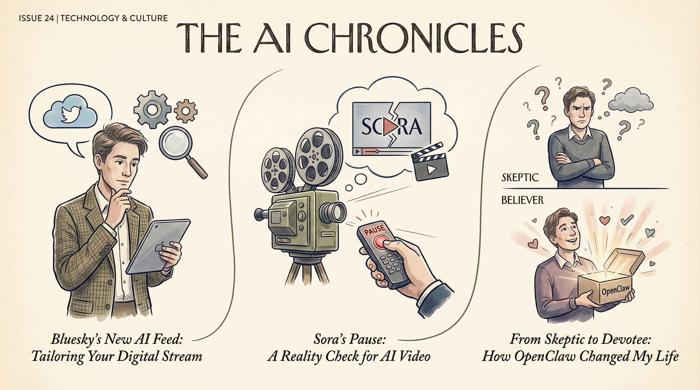

OpenAI关闭其AI视频生成工具Sora，引发数据收集疑虑。
两克伴AIGC日报
2026-03-30 星期一

本期关注：OpenAI关闭Sora引发数据疑虑，AI音乐争议持续，DeepSeek崩溃后备战V4；医学研究AI代理技能库开源，企业微信CLI开放核心办公能力，AI应用深化与监管挑战并存。
📰 行业动态
AI音乐产业应用广泛，引发技术、法律和伦理争议。
DeepSeek网页和APP崩溃10小时后恢复，梁文锋为V4冲击波做准备。
OpenAI与盖茨基金会合作，推动亚洲地区AI在灾难响应中的应用。
🔥 今日焦点
标题：Show HN：我们构建了450个模块化代理技能用于医学研究
近日，由The_resa团队开发的AIPOCH项目取得重大进展，成功构建了一个包含450余个可执行Agent Skills的开源库，专为医学研究工作流程设计。这些技能可与OpenClaw、OpenCode和Claude等AI代理平台兼容，并将专门针对医学研究的逻辑直接编码进技能中。
企业微信近日正式开源其CLI项目，向AI开放消息、日程、文档等七大核心产品能力，支持主流AI Agent调用。此举标志着企业微信在AI办公领域的深入布局，旨在通过AI技术提升办公效率。
此次开源，企业微信优先面向10人及以下企业，开放了包括消息、文档、日程、智能表格、会议、待办、通讯录等多个高频能力。开发者可基于这些能力，快速开发贴近日常办公场景的AI应用，让AI Agent以更自然的方式理解和调用企业微信能力。
在AI Agent爆发之年，我们面临着一项严峻的挑战：如何确保AI的安全。正如标题所示，人手一个“龙虾”的时代，谁来管住失控的AI？这一问题不仅关乎AI技术的未来发展，更关系到人类社会的稳定与安全。
当前，AI技术正以前所未有的速度发展，AI Agent的应用场景日益广泛。然而，在追求技术突破的同时，我们也必须正视AI安全这一关键问题。失控的AI可能导致数据泄露、隐私侵犯、甚至引发社会恐慌。因此，确保AI安全已成为当务之急。
📚 深度长文
本文深入探讨了Anthropic公司秘密研发的“Mythos”模型。文章指出，“Mythos”模型在自然语言处理领域具有革命性意义，其核心观点在于通过模拟人类思维模式，实现更高级别的语言理解和生成。文章详细阐述了“Mythos”模型的设计理念、技术原理以及在实际应用中的优势。关键论据包括：模型在处理复杂文本、生成连贯故事和回答开放式问题时表现出色；同时，其独特见解在于将心理学、认知科学和自然语言处理技术相结合，为AI语言模型的发展提供了新的思路。
阅读本文，AI从业者可以了解到自然语言处理领域的最新动态，对“Mythos”模型的技术原理和应用前景有更深入的认识。文章深度剖析了该模型在提升AI语言理解能力、生成能力和交互能力方面的潜力，为我国AI产业的技术创新提供了有益借鉴。此外，文章还介绍了如何在ChatGPT中利用Codex创建技能，为AI开发者提供了实用技巧。总之，本文具有较高的阅读价值，值得AI从业者关注。
位于加利福尼亚州里士满的初创公司R3 Bio，在长期保持神秘之后，上周突然披露了其工作细节，声称已筹集资金以创建无感知的猴子“器官袋”，作为动物实验的替代方案。该公司在接受《连线》杂志采访时，列举了三位投资者：亿万富翁蒂姆·德雷珀、新加坡基金Immortal等。R3 Bio的这项工作引发了广泛的关注和讨论，其深度和独特见解为AI从业者提供了宝贵的思考素材。文章揭示了生物科技领域的最新进展，以及人类在探索生命奥秘过程中所面临的伦理和道德挑战。阅读本文，有助于深入了解生物科技领域的创新动态，以及未来可能对人类社会产生深远影响的科技趋势。
📄 重点论文
**核心贡献**: 提出了一种新的协作范式，通过自我评估来优化大型语言模型智能体的执行效率和推理鲁棒性，解决了不同能力成本水平的模型之间的权衡问题。
**与AI Agent的关联**: 为AI Agent领域提供了新的协作策略，有助于提高智能体的执行效率和推理能力，对智能体研究和应用有实际价值。
**核心贡献**: 引入了ClinicalAgents，一个新型的多智能体框架，用于临床决策，能够处理复杂的非线性推理，并模拟人类临床医生的迭代假设驱动推理。
**与AI Agent的关联**: 为医疗领域的AI Agent提供了新的解决方案，有助于提高临床决策的准确性和效率，对Agent领域有重要意义。
**核心贡献**: 研究了大型语言模型（LLM）智能体在编码任务中的不确定性感知和澄清寻求能力，为解决LLM智能体在开放域中遇到的不确定指令提供了新的思路。
**与AI Agent的关联**: 为LLM智能体在开放域中的应用提供了新的研究方向，有助于提高智能体的自主性和鲁棒性，对Agent领域有实际价值。
🛠️ 产品推荐
Smux是一款创新的终端分割工具，专为AI代理设计。它允许用户将终端窗口分割成多个部分，每个部分运行不同的AI代理任务。该产品通过提高终端操作效率，有效解决了多任务处理时的界面混乱问题。Smux的AI能力体现在其智能分割和调度机制，能够根据用户需求动态调整终端布局，极大提升了工作效率。对于技术从业者而言，Smux是一款极具实用性和创新性的工具。
---
RedTerm是一款专为Android设备设计的SSH终端，专注于解决远程服务器操作中图像上传的痛点。该产品通过简化图像上传流程，让用户能够直接从手机剪贴板上传图片至远程服务器，有效提升工作效率。相较于传统手动保存、上传、寻找路径的方式，RedTerm大幅缩短操作步骤，优化用户体验，是移动办公的理想选择。
---
Show HN: Self-contained Kafka demo for developers coming from RabbitMQ是一款专为从RabbitMQ转至Kafka的开发者设计的自包含演示工具。该产品通过简洁的操作，仅需5分钟即可快速上手，帮助开发者快速理解Kafka与RabbitMQ之间的实际差异。内置Claude AI技能，实现演示的快速搭建与拆除。该产品旨在解决开发者学习新技术的难题，提高学习效率，助力技术从业者快速掌握Kafka技术。